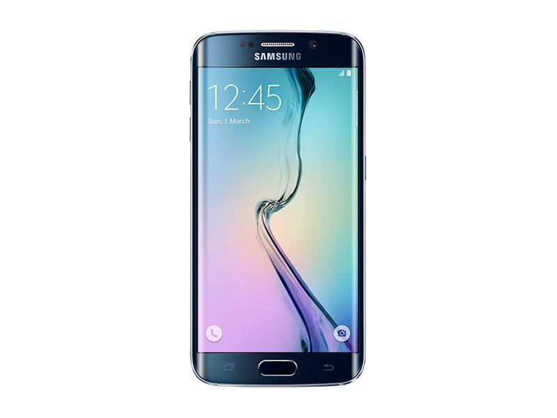

Samsung s4

Gjør hverdagen til en vakker dag
The Samsung Galaxy S4 Mini is a Galaxy S4 look-alike with a smaller screen and less hardware muscle. The device comes with a 4.3″ Super AMOLED qHD display, a dual-core processor and the TW Nature UX 2.0 on top of Android 4.2.2.
Read more at http://www.phonearena.com/phones/Samsung-Galaxy-S4-mini_id7788#wb5hlxzgH1Vlm1bf.99.